MY JOURNEY
I began my educational journey at Tadika Al-hafiz When I was 5 & 6 years old.
Home |
About Me |
Education |
Hobby |
Contact Me |
|
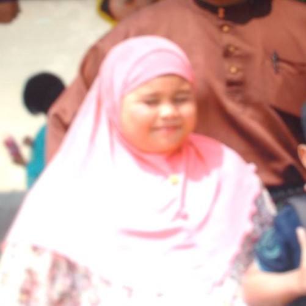 | |
MY JOURNEYI began my educational journey at Tadika Al-hafiz When I was 5 & 6 years old. |
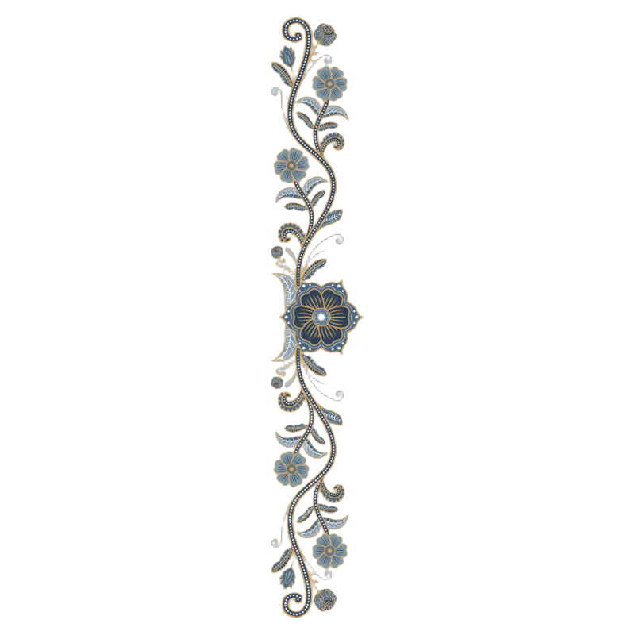 |
| 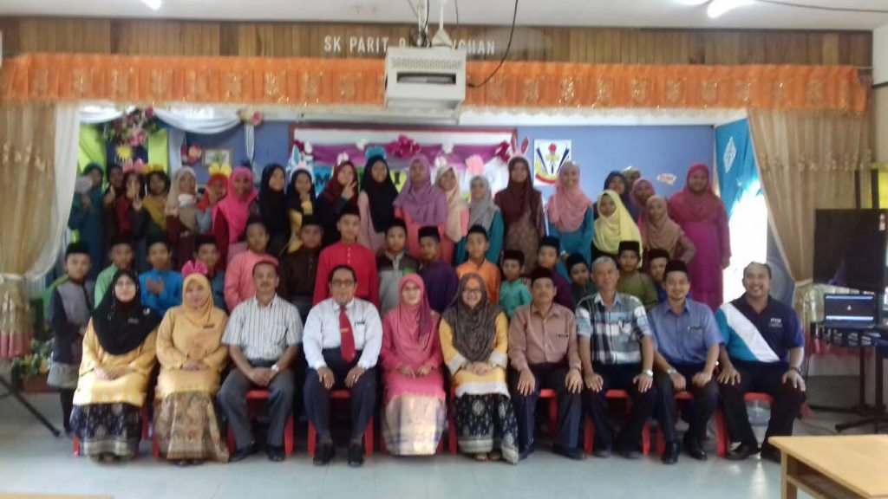 | 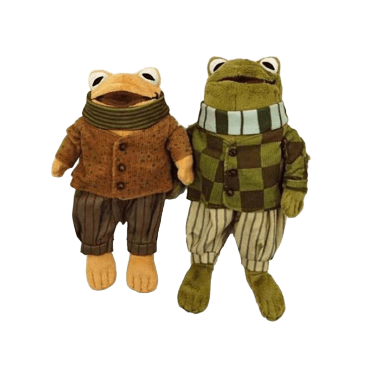 | |
PRIMARY SCHOOLSThen I continue at Sekolah Kebangsaan Parit 9, Sungai Leman, Sekinchan, Selangor So I do not have much photo during my primary school. :( |
|
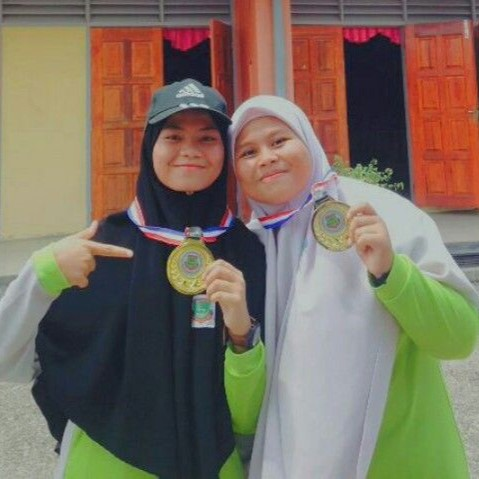
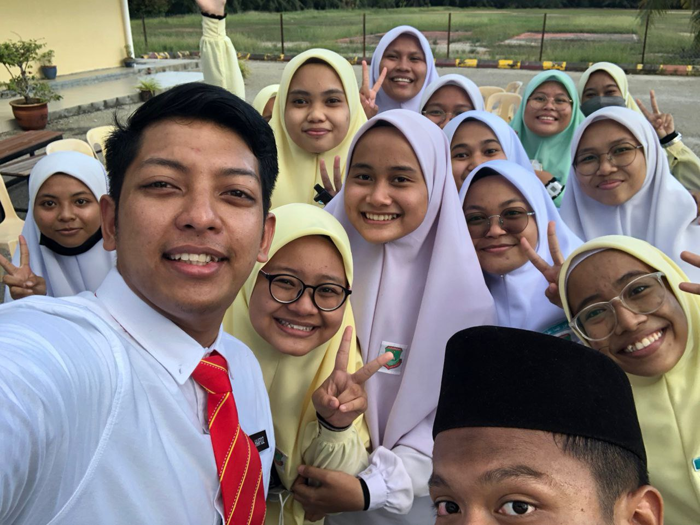
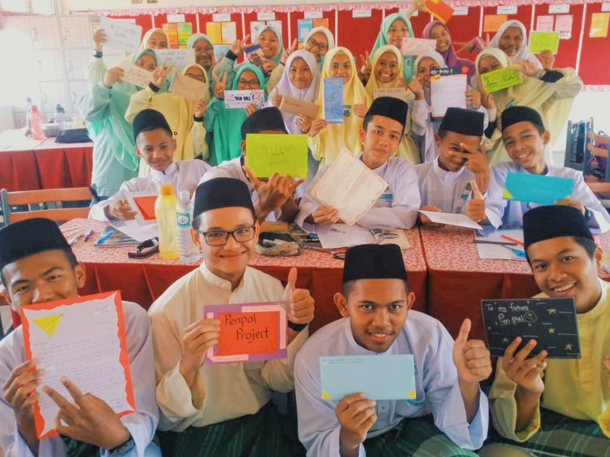
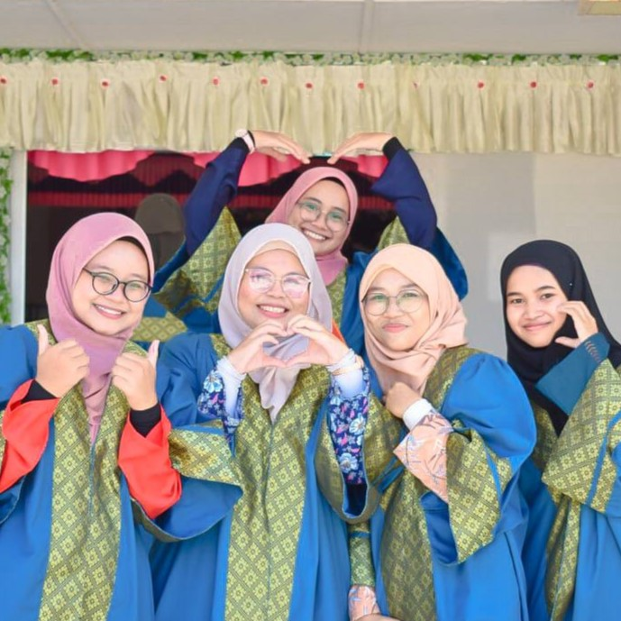
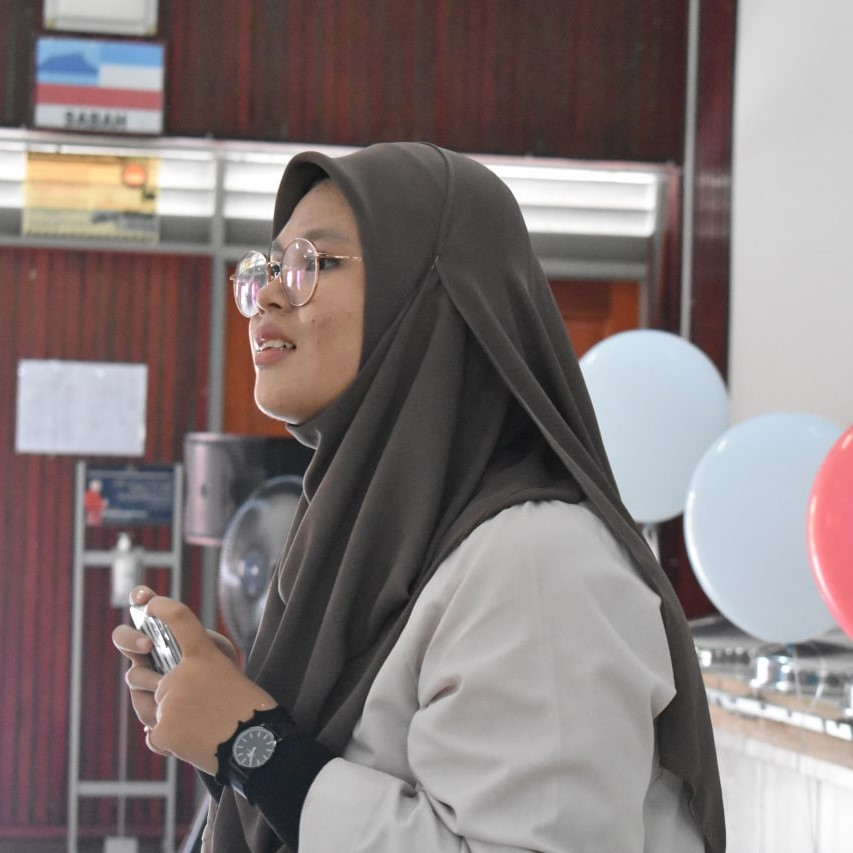
|
||
HIGHSCHOOLAfter 6 years at primary school, I continue my study at Sekolah Agama Menengah Pasir Panjang Sekichan, Selangor. I don't even know how I can enter this religious school because I don't even know the taranum during the interview session. I just know how to speak Adele language not habibi language. Hehehehe Favourite Things During Highschool
|
|
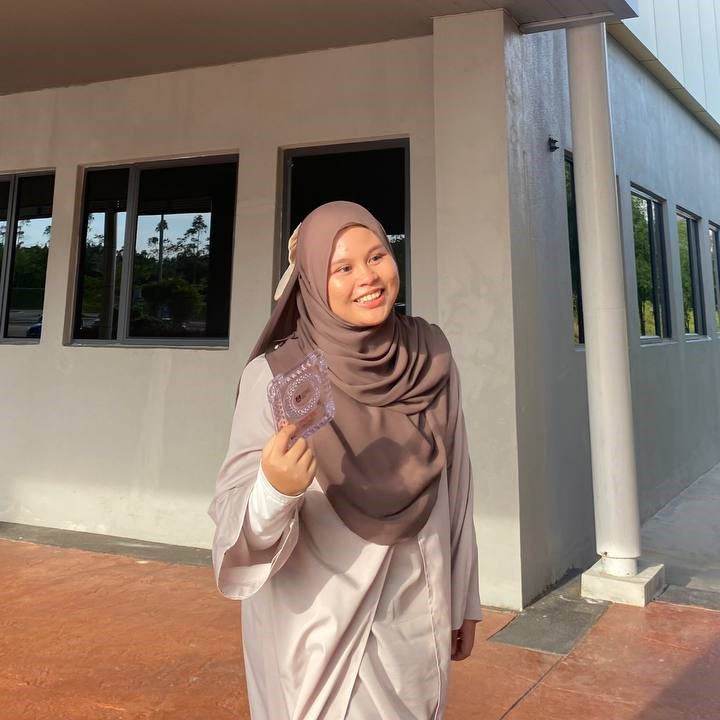
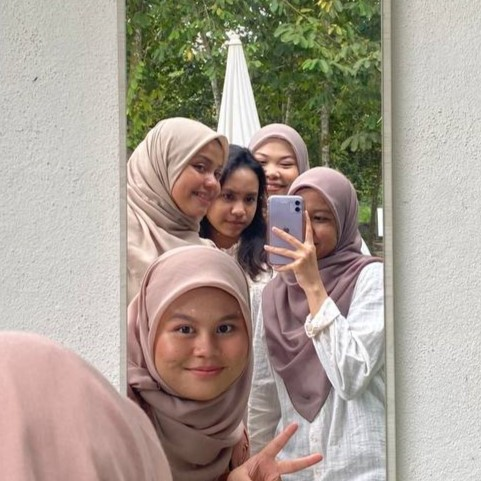
|
||
SUDDENLY IN UNIVERSITYInformation Management StudentAfter SPM done, I currently take Diploma in Information Management in UiTM Campus Rembau. I just randomly choose this course because it say this course have using coding like Javascript,HTML and etc. Even though my first choice in UPU was computer science but I only get my seventh choices. Huhu It's okey I keep learning. Remember what Dory said "Just keep swimming, swimming, swimming,swimming". Just don't give up on your choice and your life. |